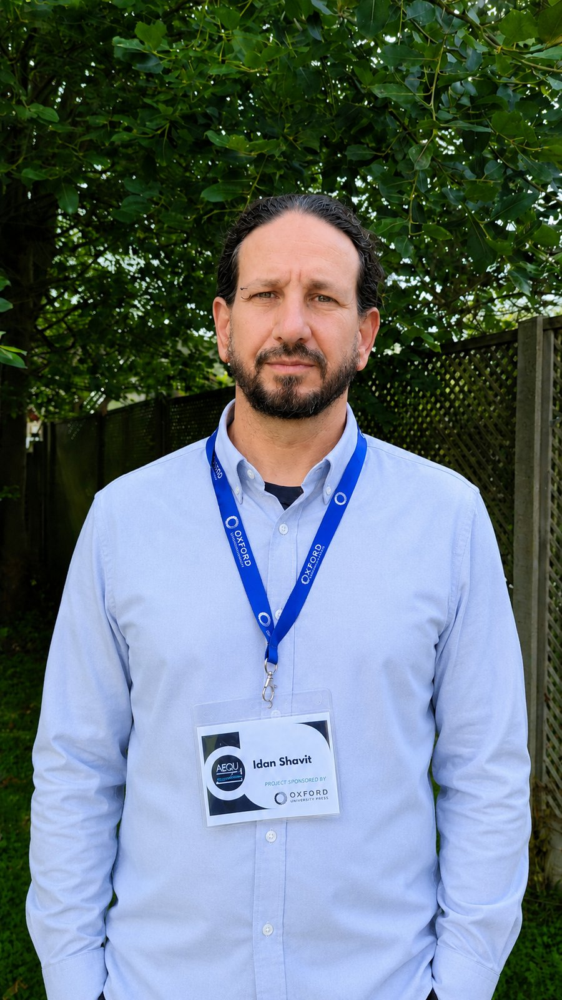
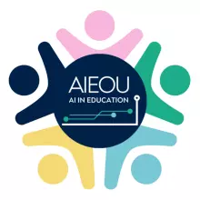

עידן שביט
מחנך, מרצה ומומחה לשילוב בינה מלאכותית, עם למעלה מ-20 שנות ניסיון בחינוך בלתי פורמלי בישראל ובאירופה — מקיבוץ שדה בוקר, דרך סופיה שבבולגריה, ועד אוקספורד.

הגישה שלי: בינה מלאכותית ואוטונומיה מודרכת
חינוך בלתי פורמלי מטפח למידה עצמאית מודרכת — מעצים לומדים לפתח כישורי הכוונה עצמית תוך קבלת ליווי מובנה. בינה מלאכותית יכולה להגביר גישה זו: להתאים אישית מסלולי למידה, לייעל משימות שגרתיות, ולפנות למחנכים מקום ליצירתיות, חשיבה ביקורתית ומודעות ערכית. מחנכים צריכים לאמץ בינה מלאכותית ככלי לאוטונומיה — לא לפחד ממנה כתחליף.
המסע שלי
תמיד נמשכתי למחשבים ולטכנולוגיה. בתקופת הקורונה נאלצנו, כמו כל מערכת החינוך, למצוא דרכים חדשות ללמד מרחוק — ולהשתמש בטכנולוגיה כדי לגשר על הפער שנוצר. משם התחלתי לשלב יותר ויותר טכנו-פדגוגיה בעבודה שלי. וכשהבינה המלאכותית הגנרטיבית הגיעה לציבור הרחב, נשביתי מיד באפשרויות שנפתחו — וקפצתי לתוכן בלי לחשוב פעמיים.
המסע הזה לקח אותי מהוראת חינוך בלתי פורמלי והדרכה פדגוגית במכון הדמוקרטי במכללת קיי, אל ייעוץ טכנולוגי למחלקת המחשוב של המכללה, ומשם אל צוות החדשנות במשרד החינוך. היום אני ממשיך את המסע כמוביל קורס במכון מופ״ת, ומלווה מחנכים לגלות את האפשרויות שבינה מלאכותית פותחת בהוראה ובלמידה.
היום
הובלת קורס — מכון מופ״ת
הובלת הקורס "ללמוד וללמד בעידן הבינה המלאכותית".
ייפתח בנובמבר 2026יועץ, מחלקת מחשוב — מכללת קיי
ייעוץ בנושא שימוש בבינה מלאכותית וחוויית משתמש (UI/UX), וגישור בין השטח לתאוריה וליישומים מתקדמים. שותפות בפרויקט הטמעת הבוט החדש של המכללה.
המרכז לקידום הוראה — מכללת קיי
מוביל הטמעת שימוש בבינה מלאכותית בהוראה ובהכשרת מורים.
ייעוץ פדגוגי — המכון הדמוקרטי
ייעוץ בנושא פדגוגיה חינוכית דמוקרטית ובינה מלאכותית.
צוות החדשנות — משרד החינוך
עיצוב סדנאות בנושאי פדגוגיה עתידנית, למידה משחקית ושילוב אתי של בינה מלאכותית בכיתות.
לאורך הדרך
מרצה ומדריך פדגוגי, המכון הדמוקרטי — מכללת קיי
לימדתי חינוך בלתי פורמלי והדרכתי פדגוגית סטודנטים במכון.

AIEOU — אוניברסיטת אוקספורד
השתתפות בכנס AI in Education Oxford University, מפגש עולמי של חוקרים ואנשי חינוך על עתיד הלמידה בעידן הבינה המלאכותית.
בדרך
משלחת חילופי ידע — מכללת קיי ואוניברסיטת באקו
ניהול פדגוגי ומקצועי של משלחת חילופי ידע בנושאי בינה מלאכותית ומדיניות בינה מלאכותית באקדמיה.
מיני האקתון חינוכי — מכללת בית ברל
בשיתוף מכללת בית ברל.
20.8.2026המלצות
"עידן ביסס את מעמדו כמרצה מצטיין, בעל יכולת יוצאת דופן להנגיש חומר אקדמי מורכב ולהפוך אותו למרתק עבור קהלים מגוונים — מסטודנטים בתחילת דרכם ועד חברי סגל אקדמי מנוסים."
"השילוב בין יצירתיות למקצועיות שהביא איתו... התרומה שלו לא הייתה רק מועילה — היא קידמה את הפרויקט בנקודות קריטיות. הוא גם יצר קשרי עבודה מצוינים עם עמיתים מרחבי אירופה."
"הוא לא רק מקשיב טוב — הוא מקשיב למה שבאמת קורה. הוא עוזר לסטודנטים להגדיר במה הם מתקשים ולעשות צעדים משמעותיים קדימה... הסגנון שלו צנוע, אך ההשפעה שלו מתמשכת."
"עידן עשה עבודה נהדרת בפירוק רעיונות מורכבים לשלבים ברורים ומובנים. סגנון ההוראה המקצועי אך הנגיש שלו הקל מאוד על המעקב. יצאתי מהסדנאות עם ביטחון ומוטיבציה להמשיך וללמוד."
בקצרה
20+ שנות ניסיון
חינוך בלתי פורמלי בישראל ובאירופה.
מומחה לשילוב AI
מרצה במכון מופ״ת וחבר צוות החדשנות במשרד החינוך.
ניסיון בין-לאומי
מקיבוץ שדה בוקר, דרך סופיה בבולגריה ועד אוקספורד.
חינוך מכיל
גישור בין כלים טכנולוגיים מתקדמים לפרקטיקת הוראה מכילה.